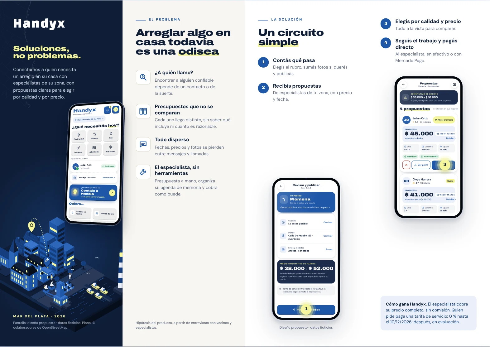
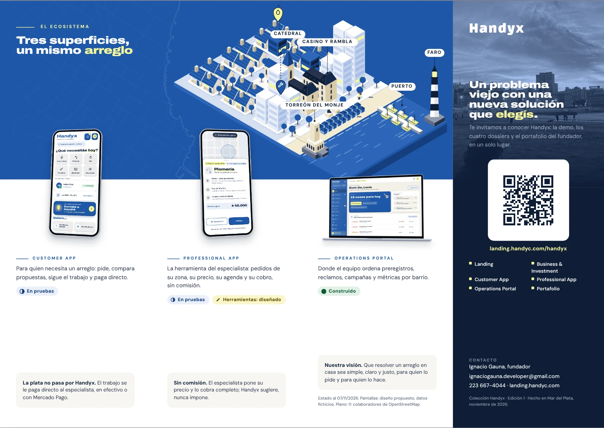

A4 apaisado (297 × 210 mm), doble faz, cuatro paneles iguales de 74,25 mm por cara: tres pliegues alternados (zigzag), plegado final 74,25 × 210 mm. El PDF de imprenta trae 3 mm de sangrado por lado. Las líneas de pliegue no se imprimen.
Cara 1 (la que se ve primero)

1 · Portada2 · Problema3 · Solución4 · SoluciónCara 2 (al dar vuelta la hoja por el lado corto)

5 · Customer6 · Professional7 · Portal8 · ContratapaCómo se pliega
Cara 1 arriba. Plegá en monte entre 1 y 2.
En valle entre 2 y 3.
En monte entre 3 y 4. Arriba queda la portada; atrás, la contratapa con el QR.
Especificaciones
| Formato final | 297 × 210 mm, plegado en acordeón a 74,25 × 210 mm |
| Archivo | Handyx-Triptico-imprenta.pdf · 2 páginas (cara 1, cara 2) · 303 × 216 mm con sangrado · TrimBox y BleedBox |
| Papel | Ilustración mate 170 g, doble faz, con hendido en los tres pliegues |
| Volteo | Por el lado corto: así el panel 8 (contratapa) queda detrás de la portada. Pedir una prueba impresa y plegada antes de la tirada |
| Color | RGB; pedir prueba de color antes de una tirada grande |